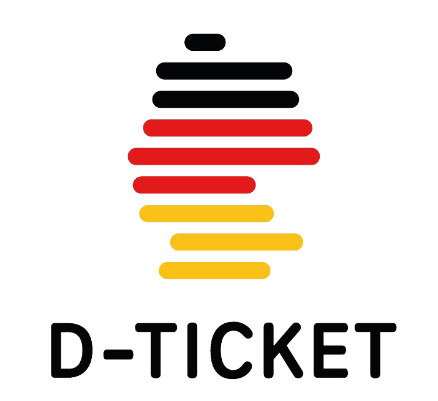
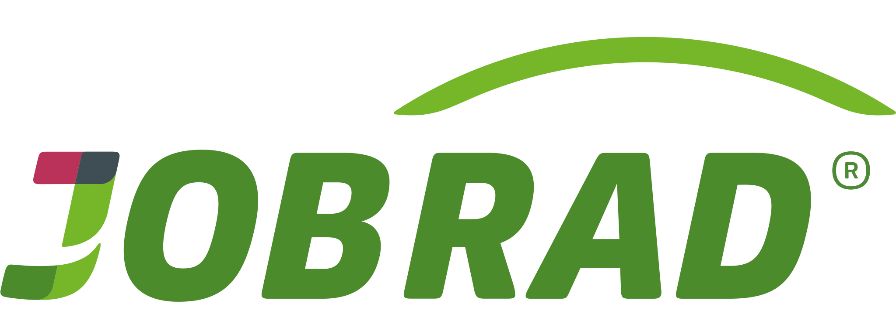
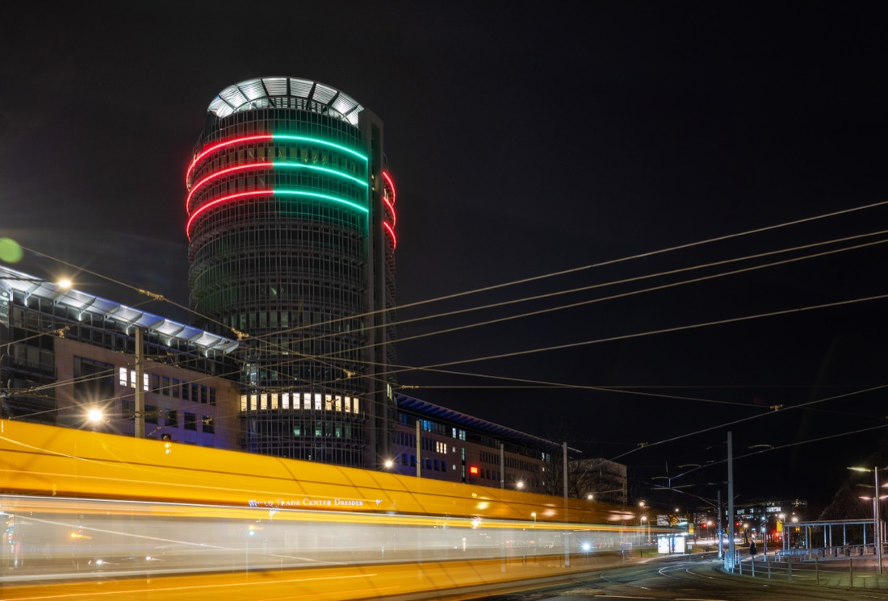
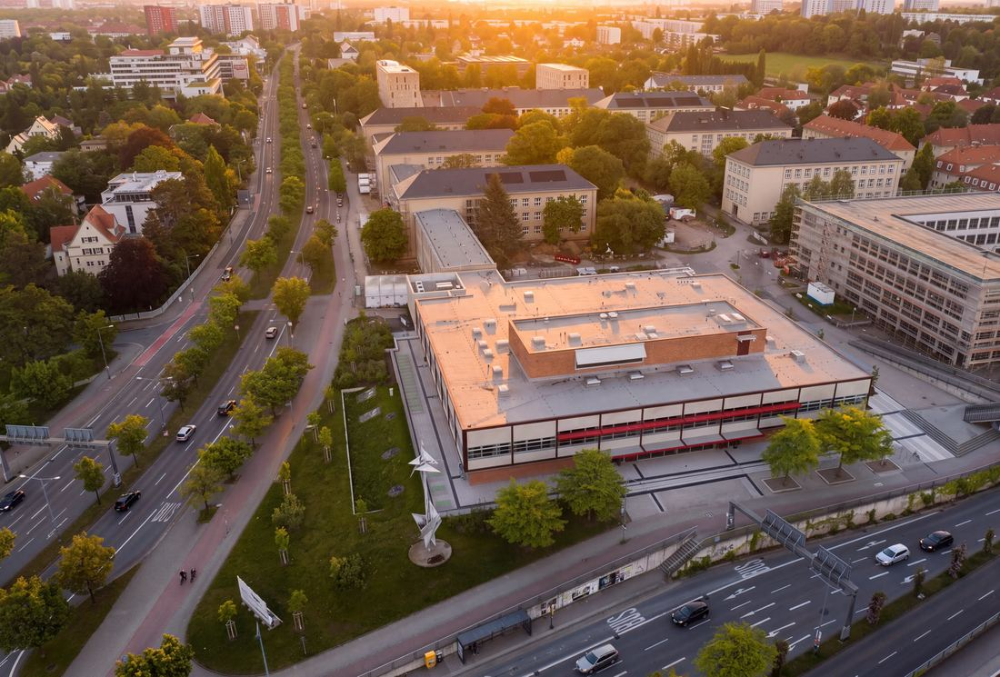
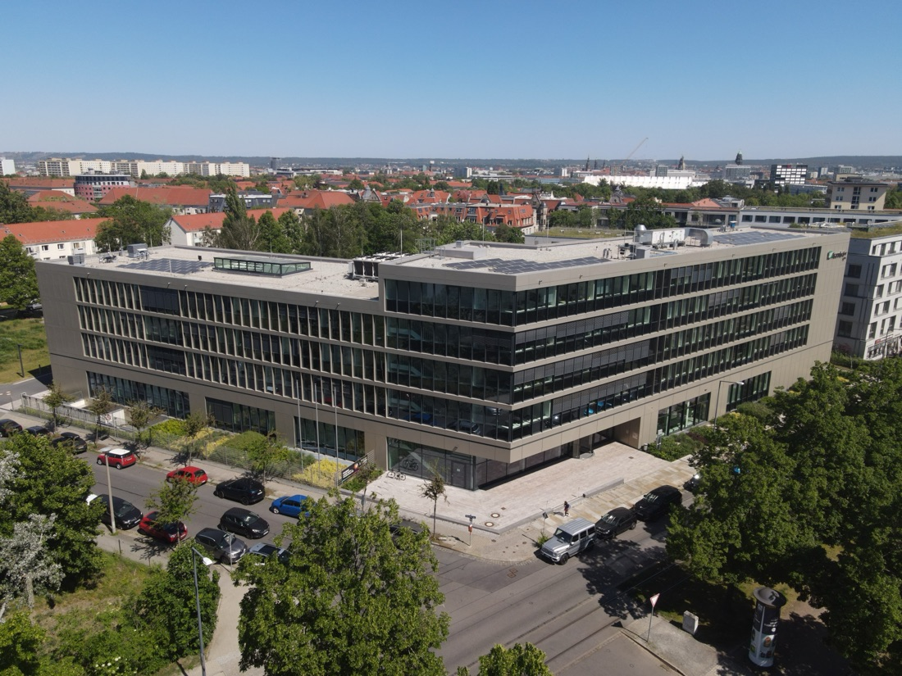
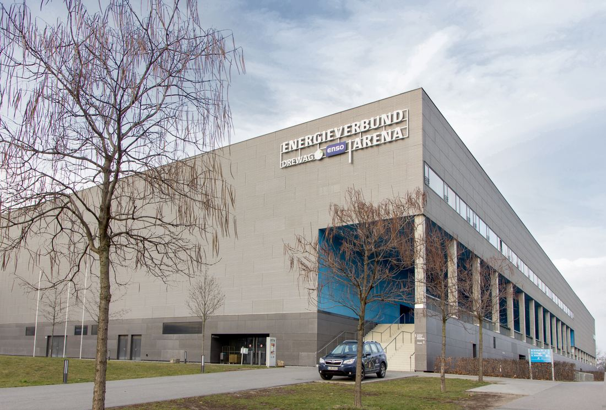
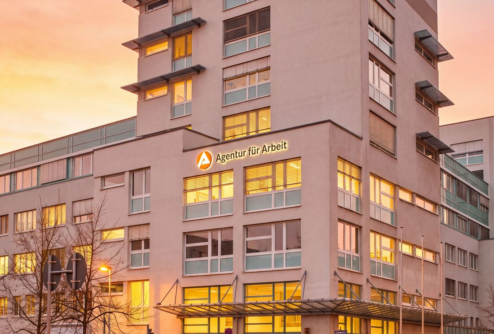
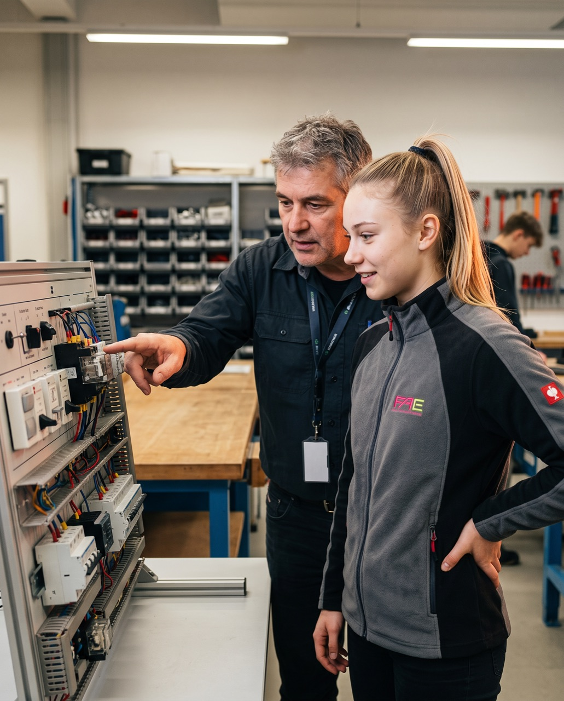
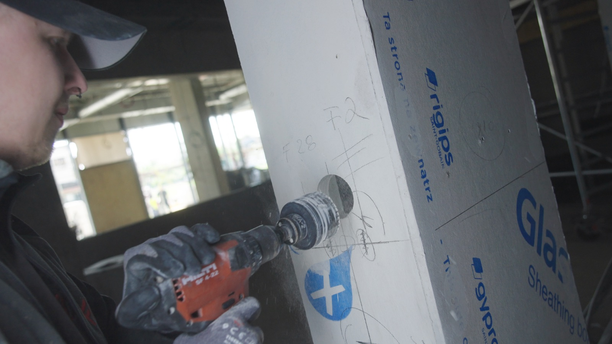
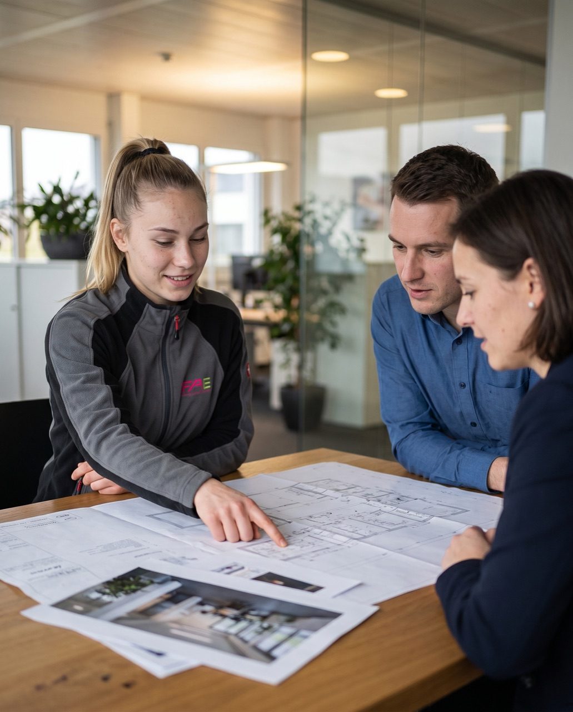

Deine Energie.
Deine Zukunft.
Ausbildung & duales Studium
Bring Dresden zum Leuchten – Strom in die Gebäude, Licht in die Räume, Technik ans Laufen. bei FAE in Heidenau bei Dresden
Vorbildlicher Ausbildungsbetrieb 2025
Ausgezeichnet von der Handwerkskammer Dresden.
Sieben Wege
Dreh den Fächer. Finde deinen Platz.
Sieben Karten, sieben Wege: pink = Ausbildung, grün = duales Studium. Zieh den Fächer, nutz die Pfeile – oder lass ihn einfach laufen.
-
Ausbildung Elektroniker Energie- und Gebäudetechnik (m/w/d)
Ausbildung · 3,5 Jahre · Start 01.08.2027 · 6 Plätze · Heidenau / DresdenWas du machst: Energie ins Gebäude bringen – vom Hausanschluss bis zur Inbetriebnahme kompletter Anlagen. Du montierst und verdrahtest Niederspannungsschaltanlagen, installierst Beleuchtungs-, Sicherheits- und Energieversorgungssysteme und prüfst nach den geltenden Normen.
Was du mitbringst: Sehr guter mittlerer Schulabschluss oder (Fach-)Abitur, technisches Verständnis und handwerkliches Geschick.
Berufsschule: BSZ „Friedrich Siemens“ Pirna – direkt neben Heidenau (nach Wohnort auch Riesa/Bautzen).
-
Ausbildung Elektroniker Gebäudesystemintegration (m/w/d)
Ausbildung · 3,5 Jahre · Start 01.08.2027 · 2 Plätze · Heidenau / DresdenWas du machst: Gebäude smart machen: Licht, Beschattung und Raumklima per KNX, DALI und Loxone steuern. Du vernetzt Sensoren, Aktoren und Visualisierungen zu einem System, nimmst Anlagen in Betrieb und jagst Fehler.
Was du mitbringst: Guter mittlerer Schulabschluss, Fachabi oder Abitur und Spaß an Logik, Programmierung und Fehlersuche.
Berufsschule: Felix-Bloch-Schule Leipzig – Fachklasse für diesen jungen Beruf, Unterricht im Block.
-
Ausbildung Informationselektroniker (m/w/d)
Ausbildung · 3,5 Jahre · Start 01.08.2027 · 1 Platz · Heidenau / DresdenWas du machst: Brandmelde- und Sprachalarmierungsanlagen installieren und prüfen, Datennetzwerke, Videoüberwachung und Zutrittskontrolle aufbauen – hochsensible Systeme in Kliniken, Behörden und Schulen.
Was du mitbringst: Sehr guter mittlerer Schulabschluss oder (Fach-)Abitur; der ruhige, präzise Typ mit Affinität zu vernetzten Technologien.
Berufsschule: BSZ Radeberg bei Dresden – hier wird der Beruf sachsenweit unterrichtet.
-
Ausbildung Technischer Systemplaner (m/w/d)
Ausbildung · 3,5 Jahre · Start 01.08.2027 · 2 Plätze · Heidenau / DresdenWas du machst: Stromlauf- und Installationspläne in CAD zeichnen (z. B. AutoCAD), Projektteams bei der Planung moderner Energie- und Gebäudesysteme unterstützen und Pläne an den Baufortschritt anpassen.
Was du mitbringst: Guter mittlerer Schulabschluss oder Abitur, räumliches Vorstellungsvermögen und solide Mathe-Basics.
Berufsschule: BSZ für Technik „Gustav Anton Zeuner“ Dresden – Fachrichtung Elektrotechnische Systeme.
-
B.Eng. Elektrische Energietechnik – BA Bautzen
Duales Studium · 3 Jahre · Start 01.10.2026 · 1 Platz · Heidenau + BautzenWas du machst: Stromnetz, Schutztechnik und Gebäudeautomation an der Berufsakademie Bautzen studieren und in den Praxisphasen an echten Bauprojekten mitarbeiten – vom Entwurf bis zur Übergabe.
Was du mitbringst: Abitur oder Fachhochschulreife, gern mit Stärken in Mathe und Physik.
Theoriephasen: Duale Hochschule Sachsen, Standort Bautzen.
-
B.Eng. Energie- und Gebäudetechnik – BA Riesa
Duales Studium · 3 Jahre · Start 01.10.2026 · 1 Platz · Heidenau + RiesaWas du machst: Energie- und Gebäudetechnik an der Berufsakademie Riesa studieren und die Theorie sofort in regionalen Bauprojekten anwenden – Wohnen, Gewerbe, öffentliche Bauten.
Was du mitbringst: Abitur oder Fachhochschulreife; analytisch denken, praktisch anpacken.
Theoriephasen: Duale Hochschule Sachsen, Standort Riesa.
-
B.A. Betriebswirtschaft Industrie – DHSN Dresden
Duales Studium · 3 Jahre · Start 01.10.2026 · 1 Platz · Heidenau + DresdenWas du machst: BWL mit Industrie-Fokus an der DHSN Dresden studieren – Controlling, Kostenrechnung, Prozesse – und in der Kalkulation lernen, wie Elektroprojekte zu Angeboten werden.
Was du mitbringst: Allgemeine Hochschulreife oder Fachhochschulreife und Zahlen-Affinität.
Theoriephasen: Duale Hochschule Sachsen, Standort Dresden.
Ausbildungsvergütung und Übernahme
Reden wir über Geld
Am Monatsende steht was auf dem Konto.
Ausbildungsvergütung im 1. Lehrjahr. Jeden Monat, ab dem ersten Tag – und mit jedem Lehrjahr mehr.
Und noch was obendrauf.
Wir unterstützen dich mit Deutschlandticket oder JobRad – damit der Weg zur Arbeit und zur Berufsschule nicht an dir hängen bleibt.


Werkzeug und Kleidung kommen dazu.
Hochwertiges Werkzeug und deine Arbeitskleidung stellen wir – das musst du dir von den 1.000 € nicht abziehen.
Noch Fragen zum Geld?
Julia antwortet dir innerhalb von 24 Stunden – kurz und ohne Bewerbung.
Und danach?
Prüfung bestanden.
Stift und
Vertrag liegen
schon bereit.
Unbefristet.
Ohne Sternchen.
Übernahmegarantie heißt bei uns: Wer die Prüfung besteht, bekommt einen unbefristeten Vollzeitvertrag. Kein „schauen wir mal".
Und dann fängt es erst an.
- 01Geselle
- 02Vorarbeiter
- 03Bauleiter
- 04Projektleiter
Mach Karriere bei
Die meisten unserer Vorarbeiter und Projektleiter haben hier angefangen – als Azubi.
Referenzen
Jeder Dresdner war schon in einem.
Büro, Museum, Kaufhaus, Labor, Amt – wo in dieser Stadt das Licht angeht, war vorher meistens jemand von uns da.





01 / 10 Friedrichstadt
World Trade Center Dresden
Büros, Läden, Lichtringe: Das WTC leuchtet jeden Abend über der Stadt – die Ringe kennst du aus der Skyline.
Karten wischen – oder unten tippen
- FriedrichstadtWorld Trade Center DresdenBüros, Läden, Lichtringe: Das WTC leuchtet jeden Abend über der Stadt – die Ringe kennst du aus der Skyline.
- ZwingerGemäldegalerie Alte MeisterHier hängt Raffaels Sixtinische Madonna. Museumslicht muss Farben so zeigen, wie sie gemalt wurden – und darf nichts ausbleichen.
- ZwingerBogengalerie im ZwingerBarock von 1728, heute Bühne für Konzerte und Feste. Technik in einem Denkmal heißt: sie muss da sein, ohne zu sehen zu sein.
- AltstadtTaschenbergpalais KempinskiFünf Sterne gegenüber dem Schloss. Über 200 Zimmer, in denen Licht, Klima und Sicherheit rund um die Uhr laufen.
- NickernKaufpark DresdenEin Lichtermeer zum Einkaufen: die komplette Elektroinstallation kommt von uns – bis zur letzten Mastleuchte.
- SüdvorstadtNeue Mensa der TU DresdenMittags stehen hier Tausende Studenten an. Küche, Lüftung, Beleuchtung – der ganze Betrieb hängt an der Technik.
- SüdvorstadtFraunhofer-InstitutSpitzenforschung braucht ein Gebäude, das mitzieht – bis in jede Leitung und jeden Serverraum.
- OstragehegeEnergieVerbund ArenaEisfläche, Flutlicht, Anzeigetafel. Wenn hier der Strom stockt, steht das Spiel.
- AlbertstadtMilitärhistorisches MuseumWeltberühmte Architektur mit dem Libeskind-Keil – und dahinter Gebäudetechnik nach Maß.
- SeevorstadtAgentur für Arbeit DresdenEin Haus, in dem täglich Hunderte Termine laufen. Beleuchtung, Netz und Sicherheitstechnik müssen einfach da sein.
Lehrwerkstatt und Patenprogramm
Erst üben, dann ernst
Du fängst nicht auf der Baustelle an.
Eine eigene Lehrwerkstatt.
Echte Übungswände im Haus: Leitungen ziehen, Dosen setzen, Verteiler aufbauen, messen. Hier darf schiefgehen, was beim Kunden nicht schiefgehen darf.
Und einer zeigt dir, wie es geht.
Ein fester Ausbilder begleitet dich durch die ganze Ausbildung. Dazu kommt dein Pate – eine feste Ansprechperson für eine feste Ansprechperson auf Augenhöhe, die jede Frage beantwortet – auch die, die dir gerade klein vorkommt.
Du hast jetzt
180 Kollegen.
Ausbilder, Pate und die anderen Azubis – vom ersten Tag an. Du startest nie allein.
Wo du arbeitest
Abends bist du zu Hause.
Kein Koffer.
Keine Montage.
Bei uns fährt niemand für Wochen auf eine Fernbaustelle. Unsere Objekte liegen in Dresden und Umgebung – Feierabend heißt hier wirklich Feierabend.
Du gestaltest das Stadtbild deiner Heimat.
Elektrotechnische Gebäudeausrüstung aus der Region für die Region – für Gebäude, an denen du jeden Tag vorbeikommst.
Dein Revier.
Wohnhäuser, Gewerbe, öffentliche Gebäude – alles in Reichweite. Du zeigst deinen Leuten Häuser, in denen dein Strom läuft.
Fragen & Antworten
Hier hängt nichts in der Luft.
Zehn Fragen, bei denen die meisten hängen bleiben. Tipp eine an – der Riegel springt auf, und die Antwort liegt frei.
-
Bewirb dich trotzdem.
In den Anzeigen steht ein Wunsch, keine Grenze: zweimal „guter mittlerer Schulabschluss", zweimal „sehr guter". Abitur braucht keiner der vier Ausbildungsberufe. Genauso wichtig ist, was danebensteht – technisches Verständnis, Geschick, Zuverlässigkeit. Das steht in keinem Zeugnis.
- 4 Ausbildungen ohne Abi
- 3 duale Studiengänge mit Abi oder FH-Reife
-
Von Dresden aus pendelbar.
Heidenau liegt südöstlich von Dresden an der Elbe, zwischen Dresden und Pirna, an der S-Bahn-Strecke S1. Der Betrieb sitzt in der August-Bebel-Straße 39. Gearbeitet wird in Heidenau und auf Baustellen in Dresden und Umgebung.
- August-Bebel-Str. 39 · 01809 Heidenau
- S-Bahn S1 Dresden–Pirna
-
Nein. Sechs von sieben Wegen bleiben in der Region.
- Ausbildung
- Energie- und GebäudetechnikBSZ „Friedrich Siemens" Pirna
- InformationselektronikBSZ Radeberg
- Technische SystemplanungBSZ „Gustav Anton Zeuner" Dresden
- GebäudesystemintegrationFelix-Bloch-Schule Leipzig · im Block
- Duales Studium
- B.Eng. Elektrische EnergietechnikDuale Hochschule Sachsen, Bautzen
- B.Eng. Energie- und GebäudetechnikDuale Hochschule Sachsen, Riesa
- B.A. BetriebswirtschaftDuale Hochschule Sachsen, Dresden
Ein Weg fällt aus der Reihe: Für die Gebäudesystemintegration gibt es in ganz Sachsen nur eine Fachklasse – die sitzt in Leipzig, dafür im Block statt einmal die Woche. Wie das organisiert ist, klärt Julia im Kennenlerngespräch.
-
1.000 € ab dem ersten Monat.
Die Ausbildungsvergütung startet bei 1.000 € im Monat und steigt mit jedem Lehrjahr. Werkzeug und Arbeitskleidung kommen von uns – die musst du nicht selbst kaufen.
Die genauen Beträge für das 2., 3. und 4. Lehrjahr stehen hier noch nicht. Frag sie ab – Julia schickt sie dir.
-
Je früher, desto mehr Auswahl.
Das duale Studium startet am 01.10.2026, die Ausbildung am 01.08.2027. Eine feste Frist gibt es nicht – aber die Plätze sind einstellig: sechs in der Energie- und Gebäudetechnik, bei drei Wegen genau einer. Wenn du schreibst, meldet Julia sich innerhalb von 24 Stunden zurück – auch auf Fragen, die keine Bewerbung sind.
- Antwort in 24 Stunden
- Studium ab 01.10.2026
- Ausbildung ab 01.08.2027
- 14 Plätze insgesamt
-
Das letzte, das du hast.
Mehr als einen Lebenslauf, dein letztes Zeugnis und ein paar Sätze dazu, wer du bist und welcher Beruf dich reizt, verlangt niemand. Kein Bewerbungsportal, kein Account, kein Anschreiben nach Vorlage.
-
Für die Bewerbung nicht.
In keiner der sieben Ausschreibungen steht ein Führerschein als Voraussetzung – weder bei den Ausbildungen noch beim dualen Studium. Wann du ihn machst, entscheidest du.
-
Werkstatt, Baustelle, Berufsschule.
Du fängst in unserer eigenen Lehrwerkstatt an – üben, bevor es ernst wird, mit einem festen Ausbilder, der dich durch die ganze Zeit begleitet. Danach geht es mit aufs Objekt: Wohnhäuser, Gewerbe, öffentliche Gebäude. Dazu die Berufsschule.

Werkstatt 
Baustelle Berufsschule Wochenstunden, Arbeitsbeginn und Urlaubstage stehen hier noch nicht. Frag nach – du bekommst konkrete Zahlen.
-
Ja, jederzeit.
Bevor du dich festlegst, kannst du den Beruf hier ausprobieren. Bis zum Ausbildungsstart geht das jederzeit – den Knopf dafür findest du weiter unten im Bewerbungsteil.
-
Ein unbefristeter Vertrag.
Prüfung bestanden heißt bei uns: unbefristeter Vollzeitvertrag. Schwarz auf weiß, ohne Sternchen. Und die Branche geht nicht aus – Energiewende, Smart Buildings und Sicherheitstechnik laufen ohne Elektroniker nicht.

Deine Frage steht nicht dabei? Dann schreib sie Julia – am schnellsten per WhatsApp. Sie antwortet innerhalb von 24 Stunden, auch auf Fragen, die keine Bewerbung sind.
Bewerbung
Der letzte Schritt
Kein Portal. Kein Account.
Eine Mail reicht.
Lebenslauf und letztes Zeugnis an PERSPEKTIVEN@fae.energy. Dazu ein kurzer Text, wer du bist und welcher Beruf dich reizt – mehr brauchen wir nicht.
Erst ansehen.
Dann unterschreiben.
Wir laden dich nach Heidenau ein: Betrieb ansehen, Lehrwerkstatt testen, Fragen stellen – und schauen, ob es passt.
Und dann geht’s los.
Die Ausbildung startet im August, das duale Studium im Oktober. Bis dahin kannst du jederzeit reinschnuppern.
Julia meldet sich innerhalb von 24 Stunden bei dir zurück.